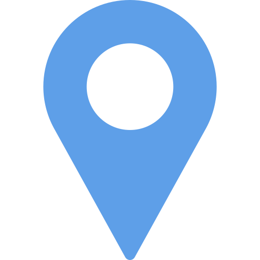

Top questions for upcoming meetups
ALCinRwanda Meetup 1.0.December 8, 2018
 University of Rwanda - College of Science and Technology
-
What is ALCinRwanda Meetup about?These are the steps you ought to take to get ready to start building the project Steps Create a Pivotal Tracker Board Create a Github Repository, add a README, and clone it to your computer
-
50
-
1
-
5
-
50
-
What is ALCinRwanda Meetup about?These are the steps you ought to take to get ready to start building the project Steps Create a Pivotal Tracker Board Create a Github Repository, add a README, and clone it to your computer
43 1 5